AdaptLearn
AdaptLearn
幫學生找出「為什麼不會」的
個人化學習網站
個人化學習網站
把講義與手寫筆記變成 —— 技能樹、卡關歸因與複習排程
組名 avocado │ 蔡旻烜
中原大學 2026 AI 教與學標竿課程實踐暨成果展演競賽 學生組
01
為什麼做這個
學生最大的問題，不是沒有答案 ——
是不知道自己「為什麼會錯」。
那堂課
線性代數
向量、矩陣、行列式 —— 跟得上
正交、投影、SVD —— 整個卡住
正交、投影、SVD —— 整個卡住
考卷給我的回饋
「這題錯了。」
沒有人告訴我：
錯的地方，在三章以前。
錯的地方，在三章以前。
這件事，我自己撞過一次。
02
02
我後來才發現的事
我不是後面聽不懂，
我是前面沒學好。
前面的章節不是「考完就能忘的進度」，是後面章節一直在用的工具。
線性代數 章節
1
2
3
4
5
6
7
8
9
第 4 章沒學好 —— 第 9 章才會錯。中間沒有人告訴我。
所以我想做的第一件事 —— 先讓系統知道，我到底學到哪裡了。
03
03
接下來的路線
接下來的七頁，是我自己問過的七個問題。
1我該讀哪裡？技能樹
2我為什麼卡住？卡關歸因
3我真的會了嗎？自適應測驗
4三天後還記得嗎？遺忘曲線排程
5以前學的能用嗎？跨課程連結
6它真的有用嗎？我自己的實測
7它錯了我知道嗎？誠實原則
一頁解決一個問題。上面那條進度條會告訴你，現在走到第幾個。
04
我該讀哪裡›
我為什麼卡住›
我真的會了嗎›
三天後還記得嗎›
以前學的能用嗎›
它真的有用嗎›
它錯了我知道嗎
丟進一份講義，長出來的不是心智圖，是一棵技能樹。
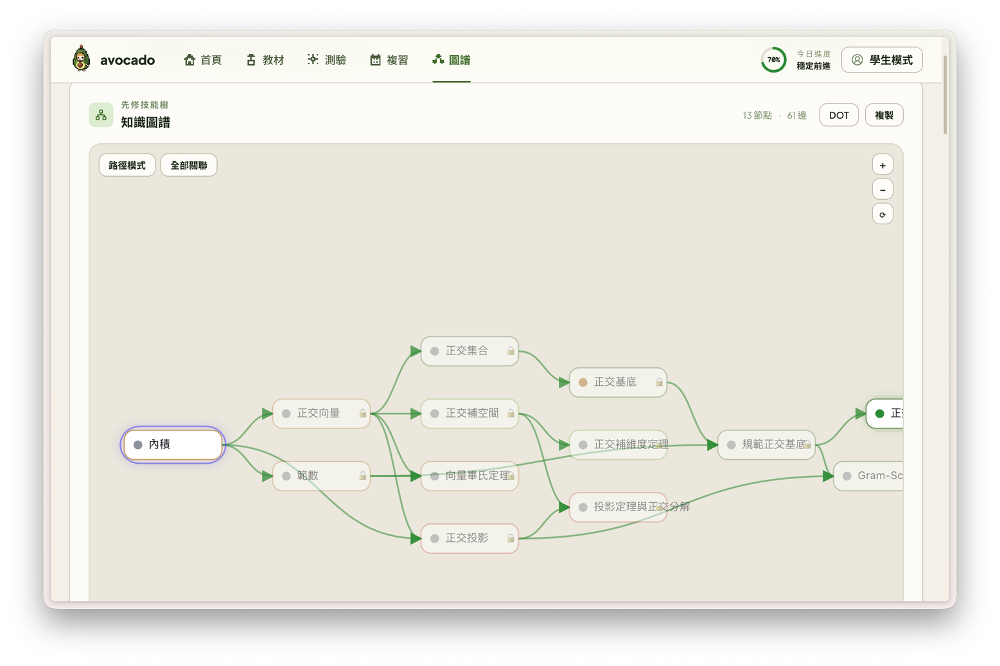
綠色
已經掌握的概念
發光
先修全綠 —— 現在可以學了
上鎖
先修沒完成，現在學會撞牆
紅色
測驗過，需要複習
左邊是基礎，右邊是進階，箭頭永遠同一個方向：先修 → 進階。
所以我不用想今天要念哪裡 —— 它會告訴我今天可以念哪裡。
05
我該讀哪裡›
我為什麼卡住›
我真的會了嗎›
三天後還記得嗎›
以前學的能用嗎›
它真的有用嗎›
它錯了我知道嗎
我卡在「正交基底」，真正的問題在三層之前的「內積」。
正交基底
67%
學習中 · 掌握度
這是 3 次實際作答算出來的，
不是設定值。
不是設定值。
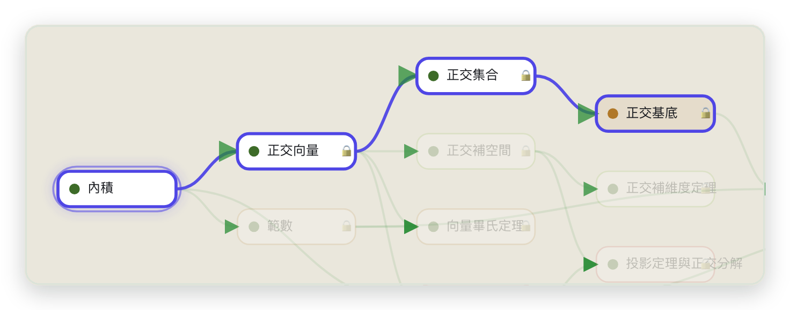
點下去，系統往回追了三層先修依賴 ——
最可能的根因：『內積』（還沒測驗過）。先回去補它。
06
我該讀哪裡›
我為什麼卡住›
我真的會了嗎›
三天後還記得嗎›
以前學的能用嗎›
它真的有用嗎›
它錯了我知道嗎
學習最好的方法是被問倒 —— 所以這件事是內建的。
01
不是隨機出題
系統挑我最弱、最沒測過的概念出題，主動把漏洞逼出來。
02
開放式作答，AI 批改
不是選擇題比對答案。它會指出我的推理是在哪一步斷掉的。
03
分數會回流
每一次作答同時更新掌握度、技能樹狀態與複習排程 —— 是一個閉環。
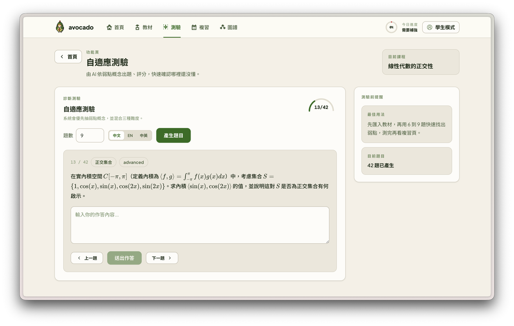
學理依據｜Retrieval Practice：主動提取比重複閱讀更能形成長期記憶（Roediger & Karpicke, 2006）
07
我該讀哪裡›
我為什麼卡住›
我真的會了嗎›
三天後還記得嗎›
以前學的能用嗎›
它真的有用嗎›
它錯了我知道嗎
「今晚先讀什麼」不是我自己排的，
是遺忘曲線算出來的。
每個概念是一張記憶卡片。系統把我全部的作答歷史重放進
FSRS-5 間隔重複模型，重建每個概念的記憶穩定度，
算出「此刻還記得的機率」。
快忘掉的、又是弱點的，排最前面
錯的東西不會消失，它會排隊等我回來
所以我不再「全部再看一次」，只補真的會忘的
今晚的複習佇列 · 依「此刻還記得的機率」排序
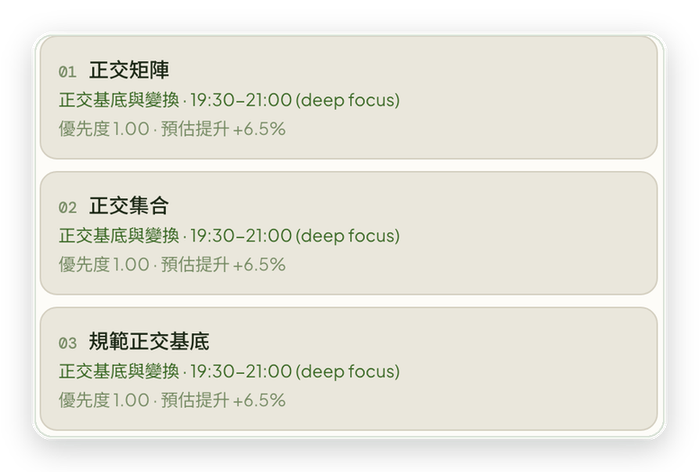
學理依據｜流暢性錯覺：重讀熟悉的內容會讓人高估自己的理解程度（Bjork, Dunlosky & Kornell, 2013）
08
我該讀哪裡›
我為什麼卡住›
我真的會了嗎›
三天後還記得嗎›
以前學的能用嗎›
它真的有用嗎›
它錯了我知道嗎
跨課程連結：讓知識遷移不再只靠自己發現。
37
條跨課程連結
這門課相關
全部 4 門課共 44 條
全部 4 門課共 44 條
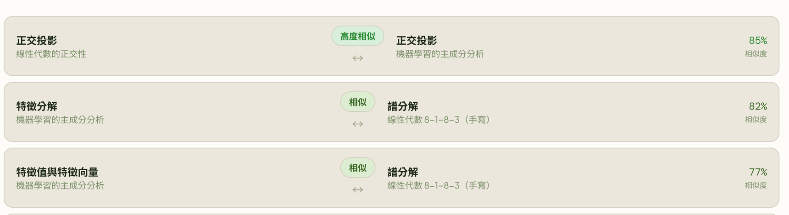
我在線性代數學過的正交投影，到了機器學習的 PCA 又出現。
這兩門課是不同時間上傳的 —— 但 AdaptLearn 把它們接了起來。
重點不是找相似詞，而是把學生過去學過的知識，在需要的時候重新找回來。
相似度門檻 0.68 是用標註樣本的實測分佈校準出來的，不是拍腦袋定的。
學理依據｜知識遷移不會自動發生，需要刻意建立連結（National Academies, How People Learn II, 2018）
09
我該讀哪裡›
我為什麼卡住›
我真的會了嗎›
三天後還記得嗎›
以前學的能用嗎›
它真的有用嗎›
它錯了我知道嗎
那它真的改變我的學習了嗎？ 這不是實驗數據，是我自己。
班級排名
22
→
10
上學期 22 / 51 → 本學期 第 10 名
工程數學、演算法、訊號與系統、資料探勘皆 90 分以上
工程數學、演算法、訊號與系統、資料探勘皆 90 分以上
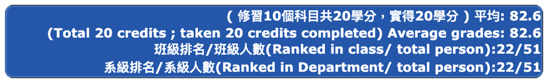
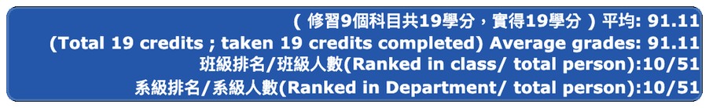
期末考前三週，我的複習方式
01
先用診斷測驗找出弱點概念
02
再按「今晚該讀什麼」與遺忘曲線排程
03
把有限時間集中在最需要的概念上
以前是重讀已經會的東西；
現在是先找缺口，再補缺口。
現在是先找缺口，再補缺口。
成績進步受多重因素影響，無法全數歸因於單一工具。
但它把「不知道自己哪裡不會」變成「明確的弱點清單與複習時點」—— 這確實改變了我複習的方式。
10
我該讀哪裡›
我為什麼卡住›
我真的會了嗎›
三天後還記得嗎›
以前學的能用嗎›
它真的有用嗎›
它錯了我知道嗎
AI 一定會犯錯 —— 所以我把失敗也設計進去。
手寫辨識在本機跑
四層 OCR 備援鏈，取第一個成功的結果。離線、不用付費、資料不外傳。
防 LLM 幻覺三道防線
先修只能指向同一批概念、過濾行政雜訊、概念 ID 決定論生成不分裂。
誠實原則
OCR 失敗會明確告警，絕不靜默套模板假裝成功。這是我修過的真實 bug。
四層 OCR 備援鏈 · 依序嘗試，取第一個成功的；四層全失敗就明確告警
01本機 Ollama 視覺
→
02Chandra OCR
→
03Gemini 原生 PDF
→
04Gemini 逐頁視覺
→
失敗明確告警
14
手寫筆記頁數 · 本機 OCR
63
概念節點 · 4 門課
105/110
自動化測試通過（5 條為待更新的舊整合測試）
React ／ FastAPI ／ PostgreSQL ／ ChromaDB ／ Gemini API ／ 本機 Ollama 視覺模型
11
這個網站，沒有一個功能是我想像出來的。
每一個，都是我自己學不下去的時候，
真的希望有人給我的東西。
當一個學生說「我不會」，
系統不只給他答案 —— 而是陪他找到：你為什麼不會。
系統不只給他答案 —— 而是陪他找到：你為什麼不會。
謝謝。 組名 avocado │ 蔡旻烜
12
附錄 A1
被問到「你跟 ChatGPT、NotebookLM 差在哪？」
能回答問題，不等於知道我卡在哪。
聊天式 AI
記得我問過什麼
不記得我會了什麼
問一題，答一題。下一次它不知道我上次哪裡錯。
NotebookLM 心智圖
記得我的資料
不記得我
畫的是「這個屬於那個」，不是「我要先會什麼」。
我真正需要的
記得我
學到哪裡
「我要先會什麼，才學得動這個？」
沒有人做給我 —— 所以我自己做了。
A1
附錄 A2
被問到「點下去之後看到什麼？」
概念深度詳解：定義、重點、範例、常見誤區。
核心定義
數學式用 LaTeX 渲染，不是純文字。
關鍵重點
為什麼這個概念重要、它保證了什麼。
範例
具體算一次，不是抽象敘述。
常見誤區
紅框那段。這是我自己答錯過的地方 ——「正交基底」與「單範正交基底」的混淆。
內容是 lazy 生成的 —— 點開才算，不在匯入時預生。
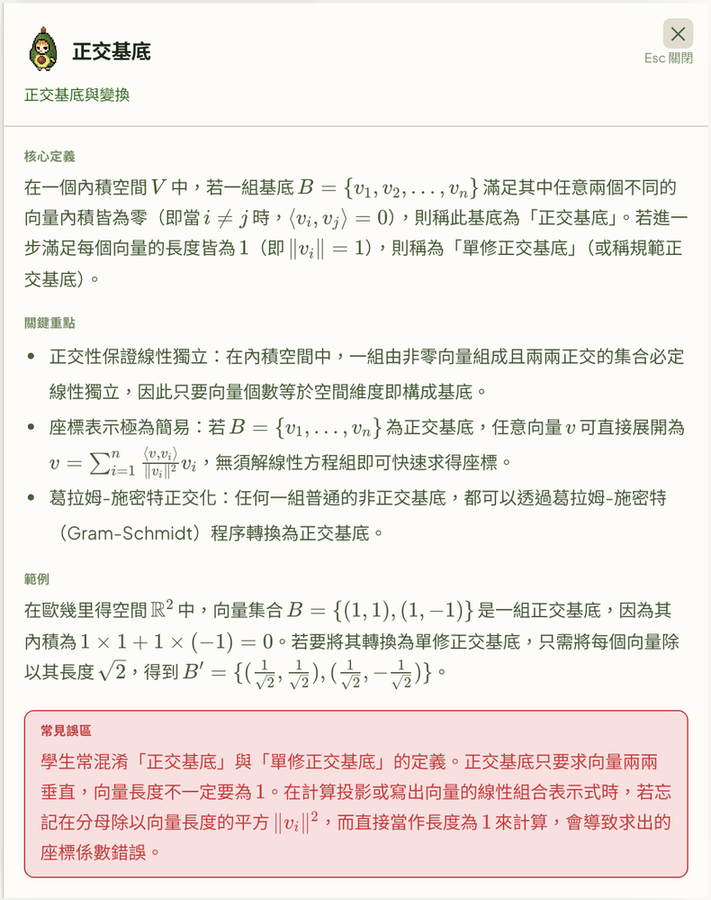
A2
附錄 A3
被問到「AI 批改到底多細？」
它不是給分數，它指出我的推理斷在哪一步。
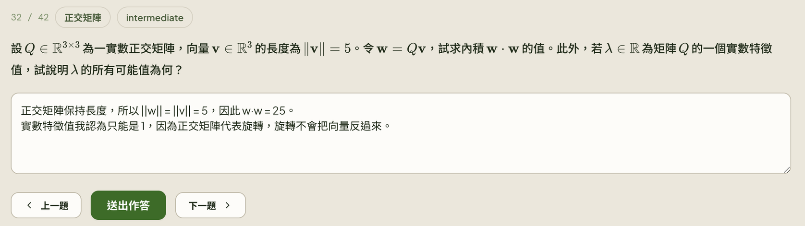
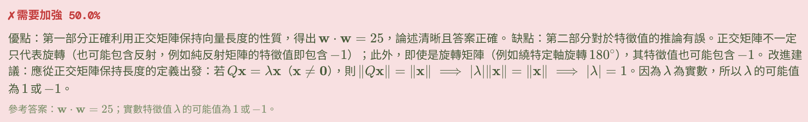
優點
前半正確，保長度推出 w·w = 25。
缺點
後半錯了，並舉反例：純反射矩陣、繞軸轉 180° 的旋轉矩陣，特徵值都可能是 −1。
改進建議
從定義重推一次給我看。
我錯的不是計算，是以為正交矩陣只有旋轉。它抓到的正是這一步。
A3
附錄 A4
被問到「這是教與學的競賽，老師在哪裡？」
同一份資料換個視角，就是老師要的東西。
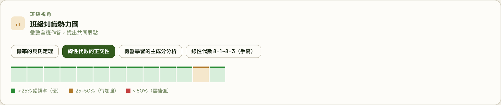
每一格是一個概念，顏色是全班錯誤率
老師看到的不是「這班笨」，是「第幾章沒教好」。
琥珀色那一格就是「正交基底」——3 次作答錯 1 次 = 33% 錯誤率，落在 25–50% 區間。
琥珀色那一格就是「正交基底」——3 次作答錯 1 次 = 33% 錯誤率，落在 25–50% 區間。
我要誠實講
目前只有我一個使用者，所以「班級」其實是我自己。資料結構已經在那裡了 —— 多人使用就直接是班級視圖。
教師端儀表板是下一步，不是已完成的功能。
教師端儀表板是下一步，不是已完成的功能。
A4
附錄 A5
被問到「三題就能下結論？」
所以我把樣本數印在數字旁邊。
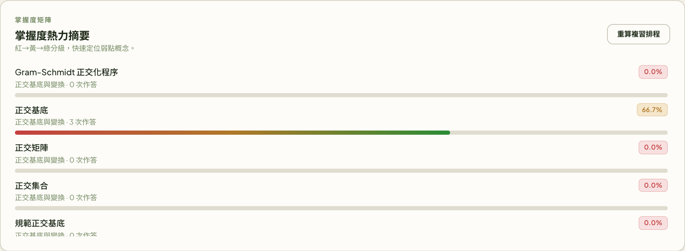
掌握度是排序訊號，不是測量值。使用者看得到它背後有幾次作答，可以自己判斷這個數字有多重。
「正交基底 66.7%」旁邊就寫著「3 次作答」——「0 次作答」跟「答錯很多次」是兩種狀態，系統分得很清楚。
「正交基底 66.7%」旁邊就寫著「3 次作答」——「0 次作答」跟「答錯很多次」是兩種狀態，系統分得很清楚。
A5
附錄 A6
被問到「真的是手寫嗎？辨識要多久？」
匯入時的三個階段是即時回報的，畫面上直接顯示已等待秒數。
實際丟進去的講義
線性代數 8-1~8-3，共 14 頁手寫。
四層備援，取第一個成功的
本機 Ollama 視覺 → Chandra → Gemini 原生 PDF → Gemini 逐頁。
時間依頁數與硬體而定
海報上「14 頁 5 分鐘」是我筆電的實測值，不是保證值；密集手寫會更久。
失敗會明確告警
OCR 全失敗時系統會說「目前顯示的是模板概念、不是你的教材」，絕不靜默假裝成功。
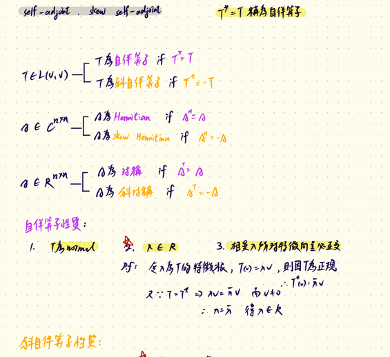
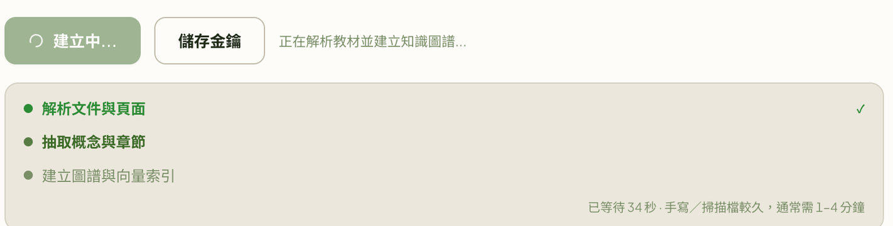
A6
附錄 A7
參考文獻
簡報中三處「學理依據」的完整出處。
Retrieval Practice
見第 7 頁
見第 7 頁
Roediger, H. L., & Karpicke, J. D. (2006). Test-Enhanced Learning: Taking Memory Tests Improves Long-Term Retention.
Psychological Science, 17(3), 249–255.
主動提取（考自己）比重複閱讀更能形成長期記憶。
主動提取（考自己）比重複閱讀更能形成長期記憶。
流暢性錯覺
見第 8 頁
見第 8 頁
Bjork, R. A., Dunlosky, J., & Kornell, N. (2013). Self-Regulated Learning: Beliefs, Techniques, and Illusions.
Annual Review of Psychology, 64, 417–444.
重讀熟悉的內容會讓人高估自己的理解程度（illusions of competence）。
重讀熟悉的內容會讓人高估自己的理解程度（illusions of competence）。
知識遷移
見第 9 頁
見第 9 頁
National Academies of Sciences, Engineering, and Medicine (2018). How People Learn II: Learners, Contexts, and Cultures.
Washington, DC: The National Academies Press.
先備知識影響新知識的學習；知識遷移不會自動發生，需要刻意建立連結。
先備知識影響新知識的學習；知識遷移不會自動發生，需要刻意建立連結。
FSRS-5
系統實作
系統實作
Free Spaced Repetition Scheduler (FSRS) — open-source spaced repetition algorithm.
AdaptLearn 的複習排程直接採用此模型重建每個概念的記憶穩定度。
AdaptLearn 的複習排程直接採用此模型重建每個概念的記憶穩定度。
A7